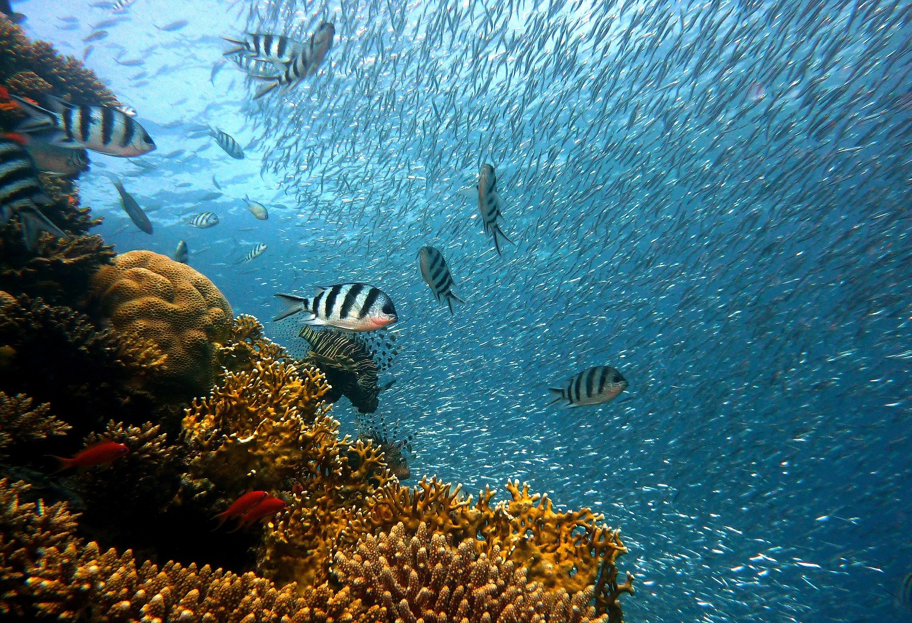

A vida começou no oceano, e ele continua sendo o lar para a maioria das plantas e animais da Terra — de minúsculos organismos unicelulares às baleias-azuis, o maior animal vivo do planeta.
A maior parte da vida vegetal do oceano é composta por algas microscópicas chamadas de fitoplânctons, que flutuam na superfície e, por meio da fotossíntese, produzem cerca de metade do oxigênio que os seres humanos e todas as outras criaturas terrestres respiram. As macroalgas e algas kelp são algas grandes facilmente visíveis a olho nu.

O oceano impulsiona sistemas globais que tornam a Terra habitável para a humanidade.Nossa água da chuva, água potável, clima, costas, grande parte de nossa comida e até mesmo o oxigênio do ar que respiramos, são todos fornecidos e regulados pelo mar.
O gerenciamento cuidadoso desse recurso global essencial é uma característica fundamental de um futuro sustentável. No entanto, atualmente, há uma contínua deterioração das águas costeiras devido à poluição, e a acidificação dos oceanos está tendo um efeito adverso sobre o funcionamento dos ecossistemas e da biodiversidade. Isso também está impactando negativamente a pesca de pequena escala.

A poluição marinha é conceituada como sendo o descarte de materiais sólidos ou líquidos não naturais do ambiente nas águas oceânicas em função da atividade humana.
Assim sendo, não seria poluição marinha por exemplo, o descarte de materiais orgânicos naturais, como restos de peixes e algas. Mas o descarte de material oriundo da atividade humana, como plástico, metal, papel, óleo e etc.
Os grandes exemplos que temos de poluição marinha são relacionados ao descarte de lixo urbano e industrial, como o despejo de plástico e metais, principalmente na China e demais tigres asiáticos.
Há também os desastres nas operações de petróleo, que já lançaram milhões de litros de petróleo no mar, além dos demais materiais descartados por acidente, como a barragem da Samarco em Mariana-MG, que despejou rejeitos de minério de ferro no rio doce e consequentemente no mar.


Salvar nosso oceano deve permanecer uma prioridade. A biodiversidade marinha é crítica para a saúde das pessoas e de nosso planeta.
 Vida na água
Vida na água